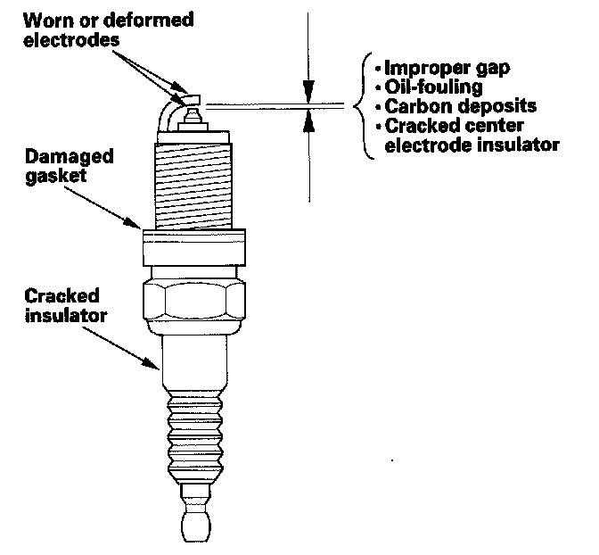
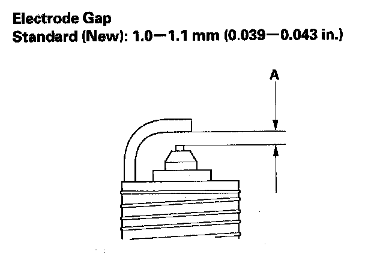
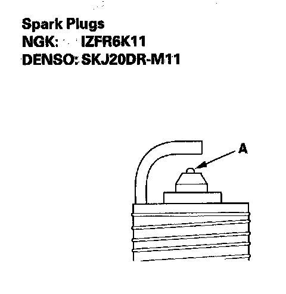

Spark Plug: Testing and Inspection
Spark Plug Inspection
1. Remove the spark plugs and inspect the electrodes and the ceramic insulator.
- Burned or worn electrodes may be caused by:
- Advanced ignition timing
- Loose spark plug
- Plug heat range too hot
- Insufficient cooling
- Fouled plugs may be caused by:
- Retarded ignition timing
- Oil in combustion chamber
- Incorrect spark plug gap
- Plug heat range too cold
- Excessive idling/low speed running
- Clogged air cleaner element
- Deteriorated ignition coils
2. If the spark plug electrode is dirty or contaminated, clean the electrode with a plug cleaner.
NOTE:
- Do not use a wire brush or scrape the iridium electrode since this will damage the electrode.
- When using a sand blaster spark plug cleaner, do not clean for more than 20 seconds to avoid damaging the electrode.

3. Do not adjust the gap (A) of iridium tip plugs; replace the spark plug if the gap is out of specification.

4. Replace the plug at the specified interval, if the center electrode is rounded (A). Use only the listed spark plugs.
5. Apply a small amount of anti-seize compound to the plug threads, and screw the plugs into the cylinder head, finger-tight. Torque them to 18 N.m (1.8 kgf.m, 13 lbf.ft).